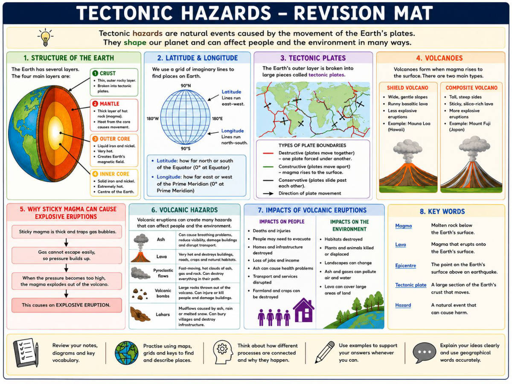

Revision Mat은 한 단원을 한 장(A3나 A4)에 몰아 담은 복습 정리표다. 보통 핵심 용어, 빈칸 채우기, 지도나 그래프 읽기, 짧은 서술 문제가 칸별로 나뉘어 들어간다. 새로 배우는 자료가 아니라 이미 배운 것을 다시 꺼내 보는(retrieval) 용도다.
여기서 CA1은 Continuous Assessment 1, 즉 한 학기 안에 여러 번 보는 평가 중 첫 번째 평가를 뜻한다. 그래서 이 정리표에 실린 칸들은 CA1 범위 안에서 선생님이 중요하다고 본 내용이다.
공부 방법은 단순하다. 먼저 아무것도 안 보고 칸을 채워 보고, 그다음 수업 노트로 맞춰 본다. 못 채운 칸이 바로 다시 봐야 할 부분이다.
✍️ 꼭 알아야 하는 것
- 칸마다 나온 지리 용어(key terms)를 영어 단어와 한국어 뜻을 함께 외워 둔다. 답을 영어로 써야 하기 때문이다.
- 한 번 채우고 끝내지 말고, 틀린 칸만 골라 며칠 뒤 다시 채워 본다.

1쪽 · Y9 지리 CA1 복습 매트
이 쪽은 글자로 읽을 내용이 없으므로, 원본 자료를 직접 보고 공부해야 한다.
약 3억 년 전 지구의 모든 땅은 판게아(Pangaea)라는 하나의 초대륙으로 붙어 있었다. 독일 과학자 알프레드 베게너(Alfred Wegener)는 1900년대 초에 대륙이 갈라져 이동한다는 대륙이동설(continental drift)을 처음 주장했다. 처음에는 많은 과학자가 믿지 않았지만, 나중에 증거가 나오면서 그가 옳았다는 것이 밝혀졌다.
베게너가 제시한 근거는 네 가지다. 첫째 대륙의 모양(fit of continents)으로, 해안선이 퍼즐 조각처럼 맞물린다. 둘째 화석 증거(fossil evidence)로, 같은 화석이 바다 양쪽에서 발견된다. 셋째 암석과 산맥 증거로 같은 암석과 산맥이 바다 양쪽에 있고, 넷째 기후 증거(climate evidence)로 지금은 추운 곳에서 석탄과 석유가, 더운 곳에서 빙하의 흔적이 나온다.
그러면 왜 움직이는가. 오래된 설명은 맨틀 대류(convection currents)다. 지구 핵(core)의 열로 맨틀 물질이 올라갔다가 식어서 내려오는 순환이 판을 끌고 간다는 생각이고, 새 지각이 생기고 사라지는 것도 설명해 수십 년간 인정받았다. 다만 최신 연구는 대류만으로는 판 전체를 움직일 만큼 힘이 세지 않을 수 있다고 본다.
오늘날 대부분의 과학자는 슬랩 풀(slab pull)과 리지 푸시(ridge push)를 핵심 힘으로 본다. 슬랩 풀이 더 강한 힘인데, 무거운 해양판이 섭입대(subduction zone)에서 가라앉을 때 그 무게가 판 나머지를 끌어내린다(책상에서 코트가 미끄러져 떨어지듯). 리지 푸시는 약한 힘으로, 중앙해령(mid-ocean ridge)에서 새 지각이 만들어지고 식어 가라앉으면서 오래된 암석을 밀어낸다. 이 두 힘을 합쳐 설명하지만, 세부는 지금도 학자들끼리 의견이 갈린다.
✍️ 꼭 알아야 하는 것
- 베게너의 대륙이동설 근거 네 가지(대륙 모양·화석·암석과 산맥·기후)를 각각 설명할 수 있어야 한다.
- 슬랩 풀과 리지 푸시의 차이를 알고, 맨틀·대류·섭입대·해령 같은 용어를 넣어 PEEL(Point-Evidence-Explain-Link) 형식으로 쓸 수 있어야 한다.
📚 이 자료의 핵심 단어
이 수업의 목표(LO)는 두 가지다. 첫째, 지구에서 지각 활동(tectonic activity)이 일어나는 곳을 지도에서 찾고 화산(volcanoes)과 지진(earthquakes)이 어디에 몰려 있는지 설명하는 것이다. 둘째, 각 판 경계(plate boundary) 종류마다 어떤 위험(hazards)이 생기는지 설명하는 것이다.
수업 시작 전 복습 질문이 나온다. 지구의 네 개 층(4 layers) 이름은 무엇인지, 어느 층이 완전히 고체(solid)라고 여겨지며 과학자들은 왜 그렇게 생각하는지, 그리고 대륙판(continental plates)과 해양판(oceanic plates)이 어떻게 다른지 답할 수 있어야 한다.
자료에는 네 가지 태도가 판 이론과 엮여 나온다. 호기심(Curiosity)은 지구의 힘이 땅 밑에 숨어 있어 질문해야 알 수 있기 때문이고, 끈기(Perseverance)는 베게너(Wegener)의 대륙이동 생각이 처음엔 거부당했지만 수십 년에 걸쳐 증명됐기 때문이다. 협력(Collaboration)은 판들이 함께 움직여 산·바다·계곡을 만드는 모습에서, 책임(Responsibility)은 지진과 화산이 위험하므로 대비하고 지구를 돌봐야 한다는 데서 나온다.
활동은 두 가지다. 활동 1은 정보 시트를 보고 Plate Boundaries Factfile을 채우는 것이고, 활동 2는 "어떤 판 경계가 가장 위험하다고 생각하는가"라는 질문에 PEEL 문단으로 답하는 것이다. PEEL은 Point(내 생각) → Evidence(예시 두 개) → Explain(왜 위험한지, 반대 의견도 언급) → Link(결론으로 다시 정리) 순서다.
GCSE 시험형 연습 문제도 있다. "발산 경계(constructive plate boundary)에서 일어나는 물리적 과정을 설명하라"는 문제이며, 쓸 낱말이 미리 주어진다. 판이 벌어지고(move apart), 그 틈(gap)으로 마그마(magma)가 올라와(rises) 용암(lava)으로 분출하며, 뜨겁고 묽은(runny) 용암이 멀리 흘러 식으면서 순상화산(shield volcanoes)을 만들고 지진도 함께 일어난다는 흐름이다. 그림(sketch)도 같이 그려야 한다.
✍️ 꼭 알아야 하는 것
- 지구의 네 층 이름, 완전히 고체로 여겨지는 층과 그 근거, 대륙판과 해양판의 차이를 말할 수 있어야 한다.
- 발산 경계(constructive)에서 판이 벌어짐 → 마그마 상승 → 용암 분출 → 순상화산·지진의 순서를 낱말 뱅크의 단어로 설명하고 그림도 그릴 수 있어야 한다.
- PEEL 순서(Point-Evidence-Explain-Link)로 "가장 위험한 판 경계"에 대한 자기 의견을 예시 두 개와 반대 의견까지 넣어 쓸 수 있어야 한다.
📚 이 자료의 핵심 단어
이 수업의 핵심 질문(Key Enquiry Question)은 "발밑에서 무슨 일이 일어나고 있고, 그것이 지진과 화산의 세계 분포를 어떻게 만드는가"이다. 즉 지구 속을 아는 것이 목적이 아니라, 지구 속 움직임 때문에 지진(earthquakes)과 화산(volcanoes)이 특정 지역에만 몰려 있다는 것까지 이어서 설명하는 것이 목표다.
수업 목표(LO)는 두 가지다. 첫째, 지구의 각 층(layer)이 어떻게 다른지 구별하는 것. 둘째, 판 운동(tectonic activity)이 지구 어디에서 일어나는지 위치를 찾고 그 분포를 설명하는 것이다. 지구는 양파나 삶은 달걀처럼 층으로 되어 있고, 각 층은 밀도(density)·암석 종류·온도가 다르다고 자료에 나와 있다.
자료에서 이름 붙이기(labelling)로 다루는 층은 지각(the crust), 맨틀(the mantle), 외핵(the outer core), 내핵(the inner core)이며, 여기에 암석권(Lithosphere)과 연약권(Asthenosphere)도 함께 나온다. 앞의 넷은 깊이 순서로 된 층 이름이고, 뒤의 둘은 지각과 맨틀 윗부분을 성질(단단한지 무른지)로 다시 나눈 이름이다.
동영상 'Why does the earth have layers?'를 보면서 객관식 문제를 푸는 활동이 있고, 정답을 초록 펜(green pen)으로 고쳐 적는다. 자료에 실린 정답 내용에는 지구가 서로 다른 밀도의 층으로 나뉜 점, 무거운 물질은 핵으로 가라앉는다는 점, 지구 자기장이 액체 상태의 외핵 때문에 생겨 태양풍(solar wind)으로부터 우리를 보호한다는 점, 내핵은 고체라는 점, 그리고 지진파가 고체층과 액체층을 지날 때 다르게 이동하기 때문에 층의 구조를 알 수 있다는 점이 있다.
성취 기준은 세 단계다. Meeting은 지구의 층을 설명하고 지진·화산의 위치를 찾을 수 있는 수준, Exceeding은 층끼리 비교하고 판 활동의 패턴을 찾아내는 수준, Mastering은 판 활동이 왜 일어나는지 설명하고 세계 분포를 분석하는 수준이다. 단순히 이름을 외우는 데서 멈추지 말고 '비교'와 '왜'까지 말로 설명할 수 있어야 위 단계로 올라간다.
✍️ 꼭 알아야 하는 것
- 지구의 네 층(지각·맨틀·외핵·내핵)을 순서대로 그리고 이름을 붙일 수 있어야 하며, 여기에 암석권(Lithosphere)과 연약권(Asthenosphere)이 어디에 해당하는지도 함께 알아야 한다.
- 외핵은 액체, 내핵은 고체라는 점과 그 때문에 생기는 결과(액체 외핵 → 자기장 → 태양풍 차단, 고체·액체에서 지진파의 이동 방식이 달라짐)를 연결해서 설명할 수 있어야 한다.
- 층을 아는 것에서 끝내지 말고, 판 활동이 일어나는 곳을 세계 지도에서 찾아 화산과 지진이 어디에 몰려 있는지 그 분포를 말로 설명할 수 있어야 한다.
📚 이 자료의 핵심 단어
이 자료는 Year 9 지리 1학기 공통평가 1(Common Assessment 1)이 언제, 어떤 방식으로 치러지는지 알려주는 안내문이다. 평가 범위는 Unit 1 - 지각변동(Tectonics) 한 단원이고, 수업에서 배운 지각 재해(Tectonic Hazards) 내용의 핵심 지식과 기능을 확인한다. 시험은 2026년 9월 21일(월)이 시작되는 주에 반별로 나눠 진행된다.
시험 시간은 40분이고 전부 글로 쓰는 필기 평가(written assessment)다. 문제는 세 종류가 섞여 나온다. 짧은 답 문제(short-answer), 지도를 보고 푸는 문제(map-based), 그리고 길게 써야 하는 서술형(extended written response)이다.
채점은 세 가지 목표(assessment objectives)로 본다. 첫째 지식과 이해(Knowledge and Understanding) — 단원에서 배운 지리 개념과 과정을 정확히 아는가. 둘째 적용과 해석(Application and Interpretation) — 그 지식을 지도·다이어그램·지리 정보를 읽는 데 쓸 수 있는가. 셋째 표현(Communication) — 지리 용어(geographical vocabulary)를 제대로 써서 설명을 분명하게 풀어내는가다.
좋은 점수를 받는 답은 단순히 아는 것을 적는 데서 끝나지 않는다. 지리 용어를 정확히 쓰고, 지리적 과정(process)과 그 영향(effects)을 설명하며, 필요한 곳에는 구체적인 사례(examples)를 붙여 뒷받침해야 한다. 답을 짜임새 있게 구성하는 것도 채점 기준에 들어간다.
자료에 적힌 복습 방법은 다섯 가지다. Google Classroom의 수업 자료 다시 보기, 노트·다이어그램·용어 정리 다시 보기, 수업에서 다룬 지도 기능(map skills) 되짚기, 핵심 개념을 스스로 문제 내어 확인하기, 그리고 PEEL 구조를 써서 설명이 잘 갖춰진 답을 써 보는 연습이다.
✍️ 꼭 알아야 하는 것
- 자기 반의 시험 날짜를 확인해 둘 것 — 9B·9D는 9월 21일(월), 9C·9E는 9월 22일(화), 9A는 9월 23일(수)이다.
- PEEL 구조(Point 주장 - Evidence 근거 - Explain 설명 - Link 연결)로 서술형 답을 쓰는 연습이 복습 방법으로 제시되어 있다.
📚 이 자료의 핵심 단어
이번 수업의 제목은 What makes volcanoes hazardous?(무엇이 화산을 위험하게 만드는가)이고, 학습목표(LO)는 여러 화산 재해(volcanic hazards)를 분석해서 어느 것이 가장 위험한지 판단하는 것이다. 즉 '화산이 터진다'로 끝나는 게 아니라, 터졌을 때 생기는 여러 위험들을 서로 비교하는 것이 핵심이다.
자료 앞부분은 지난 수업 복습 질문들이다. 베게너(Wegener)가 대륙이동설(continental drift)을 뒷받침하려고 쓴 4가지 증거, 대류(convection currents)가 어떻게 판(tectonic plates)을 움직이는지, 그리고 소멸경계(destructive plate boundary)와 충돌경계(collision plate boundary)의 차이를 묻는다. 이 세 가지가 화산 단원의 바탕이 되는 내용이므로 먼저 정리해 두면 좋다.
화산은 상태에 따라 이름이 나뉜다. 활화산(active volcano)은 최근에 분화(erupt)한 적이 있고 앞으로도 다시 터질 가능성이 큰 화산이며, 전 세계에 700개 이상이 있다. 휴화산(dormant volcano)은 지금은 쉬고 있는 화산을 가리키는 말로 함께 나온다.
✍️ 꼭 알아야 하는 것
- 활화산(active)의 정의 — 최근에 분화했고 다시 터질 가능성이 큰 화산, 세계에 700개 이상이라는 숫자까지 같이 외운다.
- 이 수업의 목표는 화산 재해들을 '비교해서 어느 것이 가장 위험한지 판단(analyse/assess)'하는 것이므로, 단순 암기가 아니라 이유를 들어 순위를 매기는 연습이 필요하다.
📚 이 자료의 핵심 단어
앞부분은 Volcanoes 101 영상을 보고 푸는 객관식 10문제다. 마그마가 지표면으로 나오면 용암(lava)이라 부른다는 것, 화산 대부분이 판 경계(tectonic plate boundaries)에 있다는 것, 불의 고리(Ring of Fire)가 그 판 경계를 따라 이어진 길이라는 것 같은 기본 지식을 확인하는 문제들이다.
화산의 종류와 위험을 재는 방법도 나온다. 넓고 납작한 돔 모양은 순상화산(shield volcano)이고, 화쇄류(pyroclastic flow)는 뜨거운 가스와 화산재가 섞여 흐르는 것이다. 폭발의 크기는 지진에 쓰는 리히터 척도가 아니라 화산폭발지수(VEI, Volcanic Explosivity Index)로 재고, 1815년 탐보라 화산(Mount Tambora) 분화는 VEI 7이었다. 화산은 위험하기만 한 것이 아니라 흙에 영양분을 공급해 지구에 생명이 살 수 있게 돕기도 한다.
뒷부분은 활동 세 개다. Activity 1은 PEEL 문단 채우기로, Point(주장 한 줄)-Evidence(For example로 시작하는 예시)-Explain(그래서 폭발이 더 강해지는 이유)-Link(그것을 알면 왜 중요한지) 순서로 쓰는 연습이다. 빈칸 앞의 영어 문장 시작 부분이 이미 주어져 있으니 그 뒤를 이어 쓰면 된다.
Activity 2는 그림(diagram)의 알맞은 자리에 번호를 붙이는 활동이고, 붙일 이름표는 판 경계의 종류(destructive/constructive), 마그마가 묽은지 끈적한지(runny or sticky magma), 가스와 압력이 쌓임, 격렬한 분화, 화산재·먼지·암석, 화쇄류다. Activity 3은 이 각 단계가 분화를 더 위험하게 만드는지 덜 위험하게 만드는지를 설명하는 것이다.
✍️ 꼭 알아야 하는 것
- 마그마=지하, 용암(lava)=지표면으로 나온 것 / 화쇄류=뜨거운 가스+화산재 / VEI=화산 폭발 크기 척도 / 탐보라 1815=VEI 7 — 이 낱말들이 이 자료 전체의 뼈대다.
- PEEL 네 글자의 순서와 역할(Point 주장 → Evidence 예시 → Explain 이유 → Link 중요한 까닭)을 외워 두면 활동을 영어로 채울 때 문장 틀이 잡힌다.
- 끈적한 마그마일수록 가스가 못 빠져나가 압력이 쌓이고 더 격렬하게 터진다는 흐름이, Activity 2·3에서 요구하는 '왜 더 위험한가'의 답 줄기다.
📚 이 자료의 핵심 단어
화산이 어떻게 터지는지는 마그마(magma)가 묽으냐 끈적하냐에 달렸다. 판 경계(plate boundaries)에서 지각이 움직이면 마그마가 천천히 표면으로 올라오는데, 마그마가 묽으면(runny) 가스가 슬슬 빠져나가서 폭발이 순한(gentle) 용암 흐름으로 끝난다. 하와이의 마우나로아(Mauna Loa)와 킬라우에아(Kīlauea)가 이런 경우다.
반대로 마그마가 끈적하면(sticky, thick) 가스가 안에 갇힌다. 갇힌 가스 때문에 압력(pressure)이 계속 쌓이고, 그 압력이 한꺼번에 터지면서 화산재(ash)·먼지(dust)·돌(rock)을 공중 몇 킬로미터까지 뿜어 올린다. 이탈리아 베수비오산(Mount Vesuvius), 미국 세인트헬렌스산(Mount St. Helens), 필리핀 피나투보산(Mount Pinatubo)이 이런 무서운 폭발을 한 화산이다.
뿜어 올라간 물질이 무너져 내려 산비탈을 타고 무섭게 흘러내리는 것을 화쇄류(pyroclastic flows)라고 한다. 화산 폭발에서 가장 위험한 부분이고, 지나가는 길에 있는 것을 다 없앤다. 자료가 드는 예는 79년 베수비오산, 1902년 마르티니크의 몽펠레(Mount Pelée), 1980년 세인트헬렌스산이며, 세인트헬렌스는 주변 숲과 마을을 파괴했다.
화산의 종류도 두 가지로 나눈다. 순상화산(shield volcano)은 묽은 용암(lava)만으로 이루어져 있어서 용암이 빨리 멀리 퍼지고, 그래서 바닥이 넓고 경사가 완만하다. 큰 분화구(vent) 하나로 용암이 나오고, 생산성 경계(constructive plate boundaries)에 생기며, 폭발이 순하고 화산탄(volcanic bombs)을 던지지 않는다. 예가 마우나로아다.
복합화산(composite volcano)은 소멸성 경계(destructive plate boundaries)에 생기고 폭발이 매우 격렬해서 화산탄을 뿜어낸다. 용암이 당밀(treacle)처럼 끈적해 천천히 움직이기 때문에 바닥이 좁고 경사가 가파르다. 여러 개의 분화구와 기생화산(parasitic cones)으로 용암이 나와 재와 용암이 층층이 쌓이고, 비가 재와 섞이면 라하르(lahars, 이류·mudflow)가 생긴다. 예가 일본 후지산(Mount Fuji)이다.
✍️ 꼭 알아야 하는 것
- 묽은 마그마 → 가스가 쉽게 빠짐 → 순한 폭발(마우나로아) / 끈적한 마그마 → 가스가 갇힘 → 압력 상승 → 격렬한 폭발(베수비오, 세인트헬렌스, 피나투보). 이 흐름을 순서대로 말할 수 있어야 한다.
- 순상화산과 복합화산의 차이(경계 종류, 용암 성질, 바닥과 경사 모양, 분화구 개수, 화산탄·라하르 유무, 대표 예)를 짝지어 외워 두어야 한다.
📚 이 자료의 핵심 단어
이 자료는 Homework 단원의 과제(assignment) 안내다. 뒤에 나오는 슬라이드에 9개의 챌린지 과제(9 challenge tasks)가 있고, 그중 딱 하나를 골라 혼자 힘으로(independently) 끝내면 된다. 더 하고 싶으면 여러 개를 해도 되고 추가 과제는 친구와 같이 해도 되지만, 최소 한 개는 반드시 혼자 해야 한다.
제출 마감은 9월 21일 월요일이며, 시간은 오후 3시(Due Sep 21, 3:00 PM)로 적혀 있다. 제출 방법은 두 가지다. Google Classroom에 올리거나, 만들기 과제처럼 실물(physical resource)을 만들었다면 선생님께 직접 내면 된다.
선생님이 보는 기준은 높은 노력(high effort)과 창의성(creativity)이다. 기간이 6주나 되므로, 일주일에 약 30분씩 나눠서 하라고 안내한다. 마지막에 몰아서 하는 것이 아니라 천천히 스스로 자랑스러울 만한 결과물을 만드는 것이 목표다. 완성한 과제는 선생님이 검토하고 평가에 반영된다.
✍️ 꼭 알아야 하는 것
- 혼자 하는 과제 1개는 필수이고, 마감은 9월 21일 월요일 오후 3시다.
- 제출은 Google Classroom 업로드, 실물로 만들었으면 선생님께 직접 제출이다.
9개 과제 중 하나를 골라 혼자 끝내면 된다. 마감은 9월 21일 월요일이고, 낼 때는 구글 클래스룸(Google Classroom)에 올리거나, 손으로 만든 실물이면 선생님께 직접 내면 된다. 더 하고 싶으면 여러 개 해도 되고 친구와 같이 해도 되지만, 최소 하나는 반드시 자기 힘으로 해야 한다.
고를 수 있는 과제는 이렇다. 1번 가상 답사(Virtual Fieldwork)는 구글 어스·스트리트뷰로 배운 곳을 찾아 화면을 캡처해 스크랩북이나 슬라이드에 붙이고 라벨·설명(annotate)을 다는 것이다. 2번은 배운 단원으로 잡지 기사(Magazine article)를 만드는 것, 3번은 탑 트럼프(Top Trumps) 카드 만들기로 최소 15장, 항목 5개 이상이 조건이다(9학년 주제는 국가 발전). 4번은 스톱모션·애니메이션 영상, 5번은 배운 지리 기능(skill)을 가르치는 짧은 영상(예: 그래프·지도 설명), 6번은 배운 내용·이론을 가르치는 영상이다.
7번은 지형이나 지리 현상을 보여주는 3D 모형·디오라마를 만들고 설명 리플릿을 함께 붙이는 것이다. 8번은 유명 예능 프로그램 템플릿을 구글 슬라이드나 캔바에서 받아 지리 버전 게임쇼로 바꾸는 것, 9번은 카드게임이나 뱀사다리 같은 간단한 보드게임을 만들어 친구·가족에게 실제로 해보게 하는 것이다. 어떤 걸 고르든 깔끔하게, 그림·도표를 넣어 만들고, 손글씨든 타자든 상관없다.
6주 동안 하는 숙제라 일주일에 30분 정도씩 꾸준히 하면 된다. 선생님이 이 과제를 보고 1학기 성적표(Term 1 report)에 반영하며, 잘 만든 작품은 교실에 전시되거나 내년 학생들에게 쓰일 수도 있다.
✍️ 꼭 알아야 하는 것
- AI 사용은 금지(USE OF AI NOT PERMITTED)다. 자료 표지에 못박혀 있으니 직접 만들어야 한다.
- 마감 9월 21일 월요일, 제출은 구글 클래스룸(실물이면 선생님께 직접). 9개 중 최소 1개는 혼자 완성해야 한다.
📚 이 자료의 핵심 단어

1쪽 · 과제 안내: 무엇을 어떻게 낼까
✅ 9월 21일 월요일까지 도전 과제 한 개를 혼자 힘으로 끝낸다.
✅ 다음 장에 나오는 9개 도전 과제 중 아무거나 하나를 고른다.
⭐ 한 개보다 더 해도 좋다. 추가 과제는 친구와 같이 해도 되지만, 최소 한 개는 반드시 혼자 해야 한다.
어떻게 제출하나?
📅 마감: 9월 21일 월요일
💻 구글 클래스룸에 올린다. 직접 만든 실물 작품이면 선생님께 직접 낸다.
무엇을 보나?
높은 노력과 창의성이 드러나야 한다. 기간이 6주이니 시간을 들여 스스로 자랑스러운 것을 만든다.
일주일에 30분쯤 작업하는 것을 목표로 한다.
왜 중요한가?
선생님이 검토하며, 1학기 성적표에 반영된다.
복습에 도움이 되는 것이나 후배들이 쓸 수 있는 자료를 만들 수도 있다. 우수작은 전시되거나 내년 학급에 공유될 수 있다.
KS3 지리 숙제 · 선택 과제판
AI 사용 금지
과제는 9개 중 하나만 골라 9월 21일 월요일까지 혼자 끝내면 되고, 제출은 구글 클래스룸(실물이면 선생님께 직접)이다.
AI 사용은 금지이며, 1학기 성적표에 반영되므로 6주 동안 매주 30분씩 정성껏 해야 한다.

2쪽 · 숙제 선택판 3가지
1. 가상 현장학습 / 2. 내셔널 지오그래픽 / 3. 탑 트럼프
탐구: 가상 현장학습
구글 어스·구글 지도·스트리트뷰에 들어가, 배운 것을 실제 모습으로 살펴본다.
배운 곳의 장소를 화면 캡처해서 지리 스크랩북이나 구글 슬라이드에 붙인다.
팁: 이름표를 달고 설명을 적는 것을 잊지 마라.
창의·정리: 잡지 기사
이번 학기에 배운 주제 중 한 부분으로 잡지 기사를 만든다.
글, 사진, 그림(도표), 그리고 '실제 삶'의 이야기를 쓴다.
팁: 배운 주제와 딱 맞게 사례 연구로 연결하면 아주 좋다.
창의·정리: 탑 트럼프
탑 트럼프 카드를 한 벌 만든다(한 벌에 최소 15장, 항목은 최소 5가지).
7 - 나라의 자원
8 - 나라의 경제
9 - 나라의 발전
숙제는 세 가지 중 골라서 하는 선택 과제다 — 가상 현장학습, 잡지 기사, 탑 트럼프 카드.
탑 트럼프는 조건이 정해져 있다: 카드 15장 이상, 비교 항목 5개 이상, 주제는 자원·경제·발전이다.

3쪽 · 숙제 선택판 — 영상·애니메이션
4. 영화/애니메이션
5. 영상 1
6. 영상 2
[4번] 창의형 — 배운 것을 다지는 활동이다.
주제에서 배운 내용의 한 부분을 보여 주는 짧은 스톱모션/애니메이션을 만든다.
도움말: 무슨 일이 일어나는지 설명하도록 영상에 글자/자막을 넣거나 자기 목소리를 쓰면 아주 좋다.
[5번] 보조형 + 다지기 — 주제에서 배우고 사용한 지리 기능이나 기법을 가르치는 짧은 영상을 만든다.
예: 그래프나 지도 설명하기 (또는 지도 기능을 썼다면 그것).
도움말: 그 기능이 실제로 쓰이는 모습을 보여 주도록 모범 문제와 답을 넣는다.
[6번] 보조형 + 다지기 — 주제에서 배운 내용/이론의 한 부분을 가르치는 짧은 영상을 만든다.
예:
7 - 지도 기능(Map Skills)
8 - 인구변천모델(DTM)과 인구 피라미드
9 - 판 경계의 종류와 그에 따른 재해
도움말: 이미지와 지리 어휘를 넣는다.
4·5·6번은 모두 영상으로 하는 숙제다. 4번은 스톱모션/애니메이션으로 배운 내용을 보여 주고, 5번은 지리 '기능'을 가르치고, 6번은 지리 '내용·이론'을 가르치는 영상이다.
각 과제마다 도움말이 붙어 있다 — 4번은 자막이나 목소리, 5번은 모범 문제와 답, 6번은 이미지와 지리 어휘를 넣으라고 한다.
6번의 예로 지도 기능, 인구변천모델과 인구 피라미드, 판 경계의 종류와 재해가 7·8·9번으로 제시돼 있다.

4쪽 · 숙제 선택판 7~9번
7. 모형 — 도움이 되고 창의적인 활동
이번 학기에 배운 지리적 과정이나 지형을 보여 주는 3D 모형이나 디오라마를 만든다
모형을 설명하는 안내지(리플릿)를 꼭 함께 붙인다
사진을 찍어 선생님과 공유한다… 더 좋게는 전시할 수 있게 학교로 가져온다!
8. 게임쇼 — 도움이 되고 복습이 되는 활동
이번 학기에 공부한 주제나 그 주제의 한 부분으로 게임쇼를 만든다
인기 있는 게임쇼 템플릿을 찾아(구글 슬라이드나 Canva) 내려받은 뒤, 그것을 고쳐서 지리 주제에 맞는 나만의 게임쇼를 만들어 반 친구들과 해 본다
9. 게임 — 창의적이고 복습이 되는 활동
공부한 주제와 관련해 친구들과 할 수 있는 간단한 게임을 만든다
카드 게임 — 스냅, 플래시 카드처럼 간단한 것
보드 게임 — 뱀과 사다리 같은 것
팁: 친구와 가족에게 시험 삼아 해 본다
7·8·9번은 모두 이번 학기에 배운 지리 주제를 소재로 삼아야 한다.
모형은 설명 리플릿을 함께 내고, 게임쇼·게임은 실제로 친구들과 해 보는 것까지가 과제다.

5쪽 · 제출 방법과 형식
과제는 깔끔하게 정리하고 설명을 분명하게 써야 한다.
도표·그림 등을 넣어라.
손으로 쓰든 타자로 치든 상관없다.
과제는 구글 클래스룸에 올려라.
선생님이 과제를 다 했는지 확인하고, 잘한 과제는 따로 알아줄 수 있다.
제출은 반드시 구글 클래스룸 업로드로 한다. 손글씨든 타자든 둘 다 되지만, 글씨는 깔끔하고 설명은 분명해야 한다.
글만 쓰지 말고 도표·그림을 함께 넣는다. 선생님이 완료 여부를 확인하고 잘한 과제는 따로 알아준다.